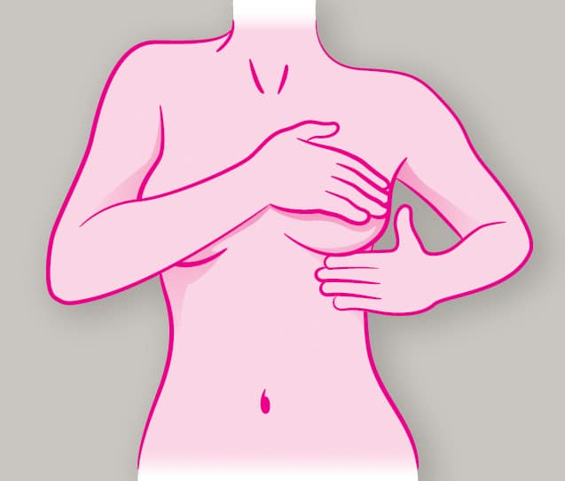
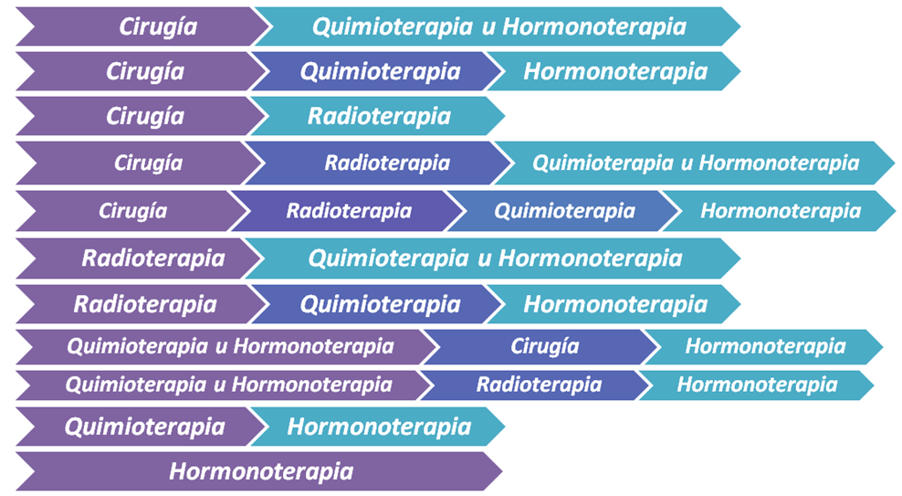

El cáncer de seno (o cáncer de mama) se origina cuando las células en el seno comienzan a crecer en forma descontrolada. Estas células normalmente forman un tumor que a menudo se puede observar en una radiografía o se puede palpar como una protuberancia (masa o bulto). El tumor es maligno (cáncer) si las células pueden crecer penetrando (invadiendo) los tejidos circundantes o propagándose (metástasis) a áreas distantes del cuerpo. El cáncer de seno ocurre casi exclusivamente en las mujeres, pero los hombres también lo pueden padecer.
Uno de los síntomas más frecuentes de la enfermedad es la aparición de un bultito. Se trata de un nódulo que generalmente no causa dolor pero que puede palparse. Otras manifestaciones son las alteraciones de la piel de la mama o la retracción del pezón, así como una excreción atípica de esta parte, especialmente sangre. Todo esto puede detectarse con un chequeo regular con un especialista.

La etapa o estadio (extensión) del cáncer de seno es un factor importante para tomar decisiones sobre sus opciones de tratamiento. En general, entre más se haya extendido el cáncer de seno, más tratamiento probablemente necesitará.
| Etapa 0 | La etapa 0 significa que el cáncer está limitado al interior del conducto de leche y es cáncer no invasivo. Los métodos de tratamiento para estos tumores de seno no invasivos a menudo son diferentes del tratamiento para el cáncer de seno invasivo. Los tumores del seno en etapa 0 incluyen el carcinoma ductal in situ (DCIS). | Etapas I a III | El tratamiento para el cáncer de seno en las etapas I a III generalmente incluye radioterapia y cirugía, a menudo con quimioterapia u otros tratamientos con medicamentos antes o después de la cirugía. |
| Etapa IV (cáncer de seno con metástasis) | Los cánceres en etapa IV se han propagado más allá del seno y los ganglios linfáticos adyacentes hasta alcanzar otras partes del cuerpo. Por lo general, el tratamiento para el cáncer de seno en etapa IV consiste en terapia sistémica (medicamento). |

El espiritu humano es mas fuerte que cualquier cosa que pueda pasarnos.